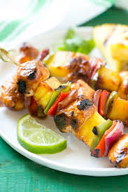

Hawaiian Chicken Pineapple Kabobs are a sweet and savoury grilling dish that features marinated chicken breast cubes, skewered with pineapple chunks, bell paper and red onions. The marinade inspired by Huli Huli Chicken typically consists of pineapple, brown sugar, soy sauce, ginger and garlic, creating a caramelized sticky finish.